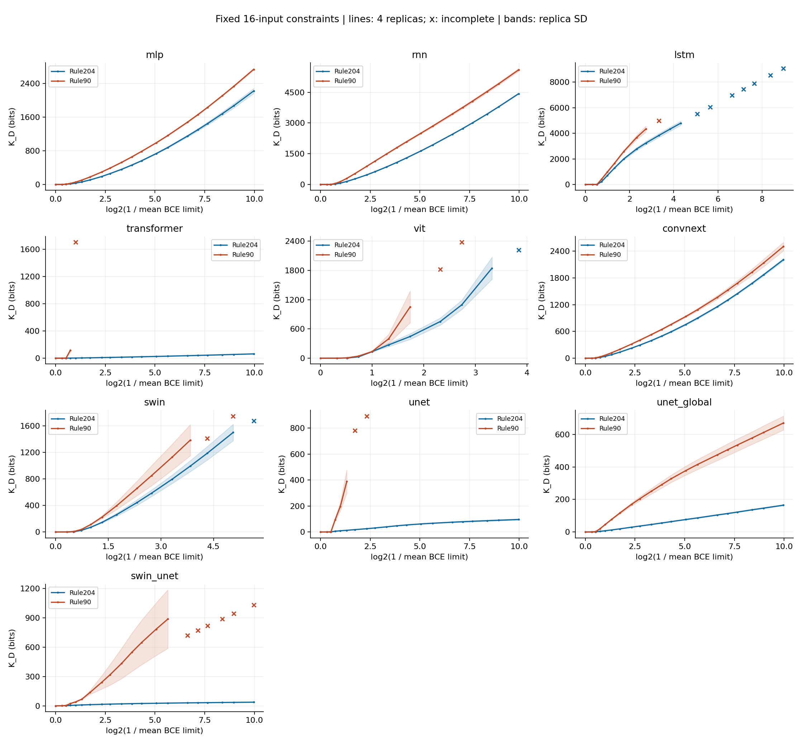
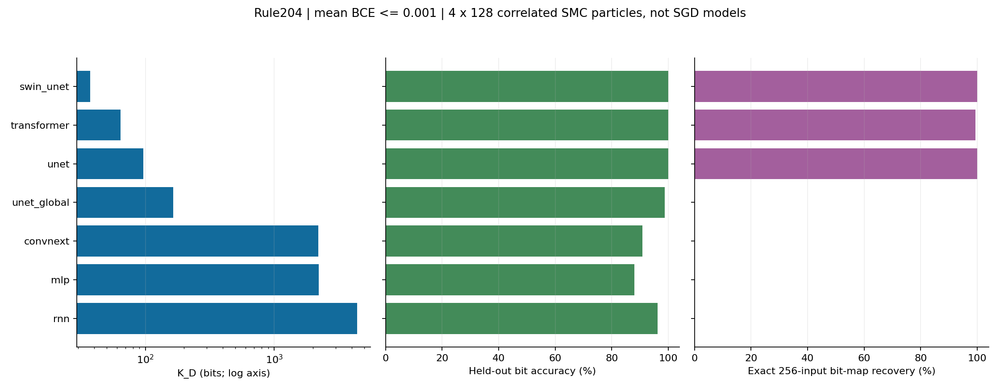
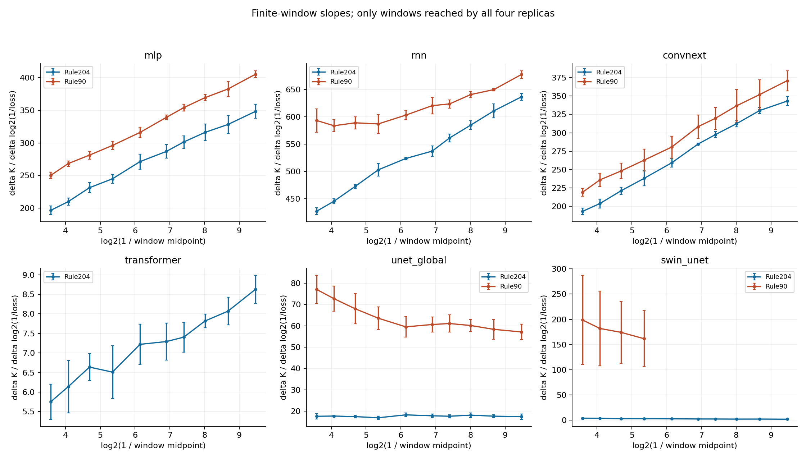
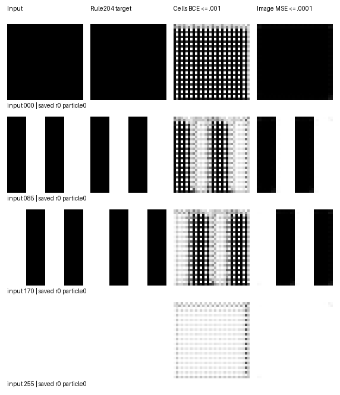

September 12 mid-run revision: an inclusion-relation alarm appeared on the max-BCE route; paused for now. For runs already in progress, press Ctrl+C and wait for saving to finish, then use the [resume-compatible version]. It only continues mean BCE and native-MSE; the scientific configuration and directories are unchanged, and existing results are neither deleted nor rerun. See the [alarm diagnosis] for details. The original full-matrix plan is kept below; formally continuing the max-BCE measurement is no longer recommended at this time.
Run the [standalone script] directly, or paste the entire file into a single Jupyter cell. It uses the already-benchmarked 5090 environment and does not download pretrained weights. Only this one .py needs to be uploaded; no builder or runner snippets are needed.
This is a new formal run directory; the old experiment_cross_architecture_output_volume.py benchmarking version and its results are unchanged.
Default experiment
| Item | Setting |
|---|---|
| Architectures | MLP, RNN, LSTM, Transformer, ViT, ConvNeXt, Swin, U-Net, improved U-Net, Swin-Unet |
| Model size | Reuses the already-benchmarked compact models, 9,800 to 145,250 parameters |
| Rules | One step of 8-bit elementary cellular automaton evolution: Rule 204 identity map, Rule 90 neighbor XOR |
| Training-constraint inputs | The first 16 8-bit inputs under a fixed random permutation, exactly the same for both rules and all architectures |
| Symbol encoding | Inputs 0/1, outputs 8 bits; one token per bit for the Transformer |
| Image inputs | 2×4 black-and-white logical cells laid out row by row in bit order, nearest-neighbor upscaled to 32×32, identical across the three RGB channels; no gray interpolation, no grid lines, no sample-ID watermark |
| Image outputs | The three U-Net-type models natively output 32×32 images; the other models output 8 numbers |
| Observations | All models measure cell-wise mean BCE and cell-wise max BCE; the three image-output models additionally measure whole-image native-MSE |
| SMC | Four independent replicas, 128 particles each; all learnable parameters participate, hidden layers are not frozen |
| Targets | BCE down to 0.001; native-MSE down to 0.0001 |
| Default budget | 180 seconds per replica per item; one sampling loop runs at most 8 hours, with saving/packaging overhead counted separately |
| Queue | Let every architecture obtain its first replica first, then fill in round by round; do not run one architecture all the way to the end |
Cell-wise mean BCE is the average over 16×8 elements. Max BCE corresponds strictly to a lower bound on the minimum signed margin over these cells; it is not a thin slice where all samples have equal magnitude.
The plain U-Net uses the raw-output MSE from the original training file; the improved U-Net and Swin-Unet use post-sigmoid MSE. native-MSE constrains all pixels and must not be conflated with the absolute K of BCE, which constrains only 8 cells. For image models, the "full bit map" means the decoding at the 8 designated cells over all inputs, not a hard map of the entire 1024-pixel image; whole-image MSE and pixel accuracy are recorded separately.
The default 16 inputs are a fixed-D measurement, not the full-rule Neural K. Each loss node additionally observes outputs on all 256 inputs, but these extra labels do not enter the SMC target, and are not used for stopping or for selecting particles.
When a full-rule constraint is needed, set POINTS=256 and set a separate RUN_TAG; the benchmarking budget for 16 inputs must not be carried over directly to 256 inputs.
Outputs
Default directory:
/root/autodl-tmp/results_cross_architecture_rule_volume_compact_curves_v1
task_examples.png: examples of black-and-white inputs and rule outputs.protocol.json,invocation_*.json,sources/: scientific configuration, environment, and source-code records, supporting Jupyter without__file__.training_data_rule*.npz,full_truth_table_rule*.npz: raw bits, images, labels, and input indices.models/*/parameter_prior.json: full parameter shapes and the Gaussian reference measure; not claimed to equal each model's default training initialization.models/*/preflight.json: real statistics of 2048 prior networks and shallow-layer direct counting.jobs/*/rule*/*/r*/checkpoint.pt: all particles, RNG, K, and progress, always retained.points.json,levels.json: volume / time cost / acceptance rate for the fixed loss nodes and all adaptive levels.node_*.npz: training-cell logits, all-256-input cell logits, full-bit-map encodings, a small number of weight snapshots, and raw output images.coverage.csv,points.csv,slopes.csv,prior_calibration.csv: coverage, K curves, contraction coefficients, and shallow-layer calibration.plots/: per-architecture K curves, BCE-window slopes; replica disagreement / nodes where replicas are not all present are marked with red crosses.report_zh.md,last_run_status.json: status of this run, errors, and interpretation boundaries.
Slopes are computed by first taking K differences within the same replica, then taking the median across replicas; the medians of two nodes are not subtracted from each other directly. For max BCE, the window coefficients are additionally given in the true margin coordinate a and in a²; the corresponding a for mean BCE is only a coordinate conversion and is not called the common magnitude of all samples.
Pausing and resuming
- Ctrl+C once: save and package after the current SMC level finishes; a second forced interrupt restores the last complete checkpoint and does not save a half-finished level.
- You can also create a
STOPfile in the results directory; remove it before running again. - Exceeding the per-replica budget: save that item and switch to the next one. The next run continues from the breakpoint, not from the prior.
- Items that have already reached the target are skipped directly, with no automatic recheck.
- Checkpoints are still retained after completion; changing
STOP_BCE/STOP_MSEto a lower value in the preset grid lets you keep sampling deeper. - You can increase
SECONDS_PER_REPLICAorMAX_RUN_HOURS, or useSKIP_ARCHITECTURES/REPLICA_IDS/JOB_KEYSto adjust the current queue. - Changing the particle count, total replica count, networks, number of inputs, data seed, number of update rounds, or software versions requires a separate
RUN_TAG. Scientific configurations are not mixed.
The default zip does not include .pt files, so the downloaded package is for analysis, and the original server directory is for resuming. All paused-particle checkpoints total about 5.65 GB; node snapshots and logs are counted separately. The zip ranges from a few hundred MB to several GB depending on the number of nodes reached and data compressibility.
Reliability
This is a fully automated finite-loss first measurement; the 128 particles are not claimed to be precise deep-tail ground truth.
Independent replicas, direct prior calibration, acceptance-rate/step-size alarms, complete logging, and engineering tests are used to find problems; the absence of alarms does not prove sufficient mixing. SMC particles are correlated with each other, so within-package agreement is not the agreement of independent SGD seeds. Higher precision should only be pursued in a separate recheck with more particles or a larger update budget for selected rules/architectures; this version does not automatically rerun all curves.
The prototype and the formal version keep the same model/target/reference measure. The runner additionally avoids meaningless resampling when all particles are alive, and makes node decisions use the same rounding convention as the actual float32 thresholds; nominal and effective thresholds are both recorded. These engineering changes alter random trajectories; the formal SMC is not treated as a continuation of the three-level state from benchmarking.
Local verification
11 engineering tests pass, including Gaussian integrable probabilities, float32 threshold boundaries, Jupyter loading without __file__,
full-input diagnostics not changing the sampling target/RNG, breakpoint resume being bitwise identical to an uninterrupted run, skipping completed items and continuing deeper, and forced half-level interrupt recovery.
In addition, 46 shallow short-flow items were actually run across all ten architectures, all applicable observations, and two replicas, checking output shapes, plotting, and that the zip does not contain complete checkpoints.
These are engineering tests, not formal deep-tail conclusions; the formal matrix is run by the user on the 5090.
Cross-Architecture Rule Volume: First Full-Queue Analysis
Date: 2026-09-12. Source: E:\Downloads\results_cross_architecture_rule_volume_compact_curves_v1_package.zip, about 2.51 GB.
Overall assessment
This round has obtained substantive cross-architecture measurement results, no longer just benchmarking. The clearest signals are: different architectures give very different function preferences under the same training constraints; for several architectures the complete low-loss curves reproduce across four independent replicas; and rule pairs that can be jointly compared show volume/contraction differences in a consistent direction. But this is still a 128-particle finite-loss first measurement: some routes only have time-truncated results or clear replica disagreement, and it is not claimed that all architectures have passed precise deep-tail verification.
The object definition must be preserved: what is measured here is the K_D for 16 fixed inputs, not the full-rule K_f constrained on all 256 inputs.
Rule204/90 are the names of the rules generating the two sets of constraint labels; inside each curve there are still all candidate bit maps satisfying that training set.
For image models, the "full bit map" only reads the 8 designated cells of each input image; whole-image metrics are listed separately.
Coverage and reliability
- Ten compact architectures, fixed 8-bit inputs / 8-bit outputs, 16 constrained inputs, images encoded as 32×32 black-and-white cells.
- Mean BCE: 20 curves, 80 replicas in total; image native-MSE: 6 curves, 24 replicas in total.
- All 104 active replicas were attempted; 54 reached the target, and 50 hit the per-item time limit. There were no run errors.
- Equivalently, 13 curves had all four replicas reach the target, and Swin-Unet/Rule90/cell BCE additionally had 2 replicas reach the target.
- Active tasks accumulated 3.693 hours of recorded time, including in-run diagnostics; the two quarantined max-BCE records additionally took about 3 minutes each.
- The 50 unfinished items were not missed runs, nor were they all unable to reach the target; the per-item budget for this round was simply used up.
- The 2 original max-BCE records are retained but quarantined. The inclusion-relation alarm still stands and is not mixed into the conclusions below.
- Direct prior calibration did not trigger the existing heuristic alarms, but this does not certify deep-tail mixing.
Common direction across the rule pair
For each architecture, comparison is made only at the deepest common node reached by both rules and all four replicas.
All ten architectures have K_D90 > K_D204, and for each architecture all four Rule90 estimates are higher than all four Rule204 estimates.
Among them, the Transformer can only be jointly compared down to 0.6, ViT to 0.3, and the plain U-Net to 0.4, so these comparisons must not be described as their deep-tail conclusions.
For the four architectures where both rules had all four replicas reach BCE=0.001, the coefficients over the last halving window are:
c = [K_D(0.001)-K_D(0.002)] / log2(2), computed by first taking the difference within the same replica, then the median across replicas; ± is the replica SD.
| Architecture | c for Rule204 | c for Rule90 |
|---|---|---|
| MLP | 348.39 ± 10.82 | 405.43 ± 5.50 |
| RNN | 636.19 ± 6.34 | 677.03 ± 7.13 |
| ConvNeXt | 343.12 ± 6.28 | 370.81 ± 13.67 |
| Improved U-Net | 17.46 ± 1.25 | 57.16 ± 3.57 |
This supports a limited-scope cross-architecture result: on the training constraints generated by this pair of preselected rules, the conditioning on the more complex Rule90 not only has smaller volume, but also contracts faster in the final window. This cannot be upgraded to the claim that all full functions satisfy the same complexity law; only one pair of rules was measured here, and the object is the training-set conditional volume.

Architecture preferences and function condensation
Under the condition Rule204, mean BCE ≤ 0.001, with all four replicas completed, all constrained cells are answered correctly:
| Architecture | Median K_D | Mean unseen per-bit accuracy | Fraction of particles whose full 256-input bit map equals Rule204 |
|---|---|---|---|
| Swin-Unet | 37.13 | 100% | 100% |
| Transformer | 64.11 | about 99.998% | 99.41% (509/512) |
| Plain U-Net | 96.35 | 100% | 100% |
| Improved U-Net | 165.01 | 98.71% | 0/512 |
| ConvNeXt | 2207.68 | 90.87% | 0/512 |
| MLP | 2223.98 | 87.92% | 0/512 |
| RNN | 4427.77 | 96.12% | 0/512 |
The numbers are the empirical distribution of correlated SMC particles, not 512 independently trained models. 0/512 does not mean the true conditional probability is strictly zero. "Improved U-Net" is only the version name from the old code and does not mean it should be comprehensively better than the plain U-Net on this measurement.
For Swin-Unet, clear Rule204 condensation already occurs in a shallower region:
| Mean BCE cap | Fraction of full-Rule204 particles |
|---|---|
| 0.7 | 2.9% |
| 0.6 | 13.3% |
| 0.5 | 32.4% |
| 0.3 | 78.9% |
| 0.1 | 99.8% |
| 0.03 and below | 100% |
This directly shows that in the sampled static conditional distribution, the rule cluster can condense as the constraint tightens. At the same time, MLP, RNN, and others still contain a large number of different extrapolations, showing that adequate fitting and function condensation are not the same thing. The RNN's end-window contraction coefficient for Rule90 is about 677 with replica SD of only about 7, yet its unseen-bit accuracy is about 52% and its function entropy is close to the 7-bit ceiling that 128 particles can display; the target full map was not sampled. So a stable macroscopic contraction curve does not mean the function distribution has already condensed, and one cannot infer from it that the complexity of every candidate function has been measured one by one.

The absolute K_D across architectures is not a generalization score: for example, the RNN's K_D is higher than the MLP's, but its unseen-bit accuracy is also higher.
To explain generalization, one still needs to look at the relative mass of different function clusters inside that conditional region.
What is compared here is the combination of architecture, input encoding, readout design, and an explicit Gaussian reference measure, not a ranking of the architectures' general capabilities.
Not all coefficients have become constant
Over the fixed 0.01-to-0.001 interval, comparing the first and the last adjacent windows:
- The coefficients of MLP and ConvNeXt still increase by about 20%.
- RNN increases by about 9% to 18% on both rules; Transformer/Rule204 by about 18%.
- The Rule204 coefficients of the plain U-Net and Swin-Unet decrease by about 18% to 21%.
- The two curves of the improved U-Net change less, decreasing by about 2% and 6%.
Therefore the more accurate statement is: measurable, usually smooth, architecture-dependent contraction profiles have appeared, within which some window coefficients are relatively stable; it is not the case that all architectures have already arrived at the same constant-slope deep tail.
The a=-log(expm1(epsilon)) converted from mean BCE is only a coordinate reparameterization and does not mean all cells truly have equal magnitude.
The straight-line fits over the fixed interval are saved in tail_fits.csv; high R² is not treated as an asymptotic law or as certification of mixing.

Image outputs: all cells correct does not equal the whole image correct
To avoid conflating the two, this round re-ran the forward pass on all 256 inputs using the first two saved weights of each replica. The following has only 8 saved weights per condition, and the metrics only cover the 240 unconstrained inputs; these are not whole-image statistics over all 512 particles.
| Architecture and sampling constraint | Unseen pixel correctness | Fraction with every pixel of the whole unseen image decoded correctly |
|---|---|---|
| Swin-Unet, 8-cell BCE ≤ 0.001 | 64.78% | 0% |
| Swin-Unet, whole-image sigmoid-MSE ≤ 0.0001 | 99.9994% | 99.43% |
| Plain U-Net, 8-cell BCE ≤ 0.001 | 96.19% | 0.42% |
| Plain U-Net, whole-image raw-MSE ≤ 0.002 | 99.98% | 82.92% |
| Improved U-Net, 8-cell BCE ≤ 0.001 | 80.54% | 0% |
| Improved U-Net, whole-image sigmoid-MSE ≤ 0.0001 | 98.71% | 72.14% |
The cell-BCE weights of Swin-Unet show a clear mesh pattern, while the whole-image-MSE weights almost directly copy the entire black-and-white image:

The figure shows the preset inputs 0/85/170/255, and the first particle saved under r0 of each condition; the best images were not selected.
This is not a fair loss comparison of "MSE beats BCE": the third column constrains only 8 cells, while the fourth column constrains all pixels.
The code structure also gives a definite reason: the current compact Swin-Unet ends with a 2×2, stride=2 transposed convolution followed by a per-pixel 1×1 output layer;
the row and column coordinates of the 8 readout cells are all even, so they only read the same upsampling phase, and the other phases are not directly constrained by the cell BCE.
Thus the cell curves are valid for the 8-bit readout task but cannot represent whole-image generation quality; this is not a general conclusion about the original paper's full-size Swin-Unet.
Here the MSE of Swin-Unet/improved U-Net is post-sigmoid pixel MSE and must not be treated as a repetition of the earlier raw 0/1 MSE experiments.
Which parts are still not suitable for quantitative use
- The two max-BCE records have been quarantined; their huge K must not be used to discuss reordering or complexity.
- Swin-Unet/Rule90 cell BCE has only two replicas reaching 0.001; at the common 0.02 the replica relative SD of K is about 34%, with clear divergence.
- For plain U-Net/Rule204 raw-MSE, at the common 0.002 the relative SD of K is about 59%; this end curve should not be treated as a reliable absolute value.
- Transformer/Rule90 can only be jointly compared down to 0.6; its endpoints of 0.42 to 0.51 cannot be called the low-loss limit.
- Several ViT, Swin, and LSTM tasks simply ran out of a single budget. The time limit itself does not mean the architecture cannot implement the rule, nor does it by itself indicate sampling failure.
The parts where four replicas agree have reasonably good preliminary reproducibility, but a shared mixing bias may still exist; independent confirmation with higher particle counts / stronger update budgets has not yet been performed. This round did not automatically resume the 50 items or recheck everything.
Numerical audit
- The physical models, targets, and sampling cores of the two Jupyter source files in the package match the currently audited code at AST level; the packaged source code was not executed.
- The full truth tables, training inputs, labels, and images of both rules were independently rebuilt and match.
- All 1608 submitted node snapshots passed recomputation of SHA256, loss, bit-map encoding, heldout statistics, and function entropy.
- The number of constraint violations is 0; the difference between training-cell logits and the corresponding logits in the full-input diagnostics is 0; the metric recomputation difference is 0.
- Recomputing the loss from the saved logits/images gives a maximum absolute error of about 9.24e-8.
- At the last fixed node of each of the 104 active replicas, 208 sets of saved weights in total were re-forwarded in CPU float64; the maximum raw-output difference is about 1.87e-4, and the maximum relative L2 difference is about 6.24e-6. The constrained cells of the first saved weight of each replica show no sign change.
- The cumulative-K arithmetic sums and the monotonic-threshold recomputation pass for all levels; there are no unsubmitted orphan snapshots.
These checks support the consistency of implementation and data; they are not a proof of rare-event sampling convergence.
Assets
- [Full structured analysis]
- [Per-curve coverage]
- [Contraction coefficients]
- [Whole-image forward checks]
- [Snapshot audit]
- [Package analysis script]
- [Saved-image-weights forward script]
Cross-Architecture SMC Feasibility and Budget
Date: 2026-09-12. The user asked to first evaluate 5090 feasibility and not to start the formal matrix yet; diffusion has been explicitly paused.
A measured 5090 benchmarking package has since been received: all ten compact architectures pass. Measured per-layer times are about 0.0163 seconds for the MLP, about 0.0340 seconds for the Transformer, and about 0.1391 seconds for Swin-Unet, with peak reserved memory at most about 1.10 GB. The workload of ten architectures, two rules, two BCE variants, four replicas, and 1000 layers per replica converts to about 3.62 hours; this is not a guarantee of completion time to a specific loss. See the [5090 measurement analysis] for details. The statements "not yet measured on the 5090" and the multiplier estimates below are kept as earlier planning records; the new measurements take precedence.
Latest revision: structural completeness is enough; no parameter stacking
The user subsequently made clear: the earlier 400k-to-4.35M parameters were oversized; what is required is only the ability to reliably distinguish architectural mechanisms. Therefore the current default plan has been switched to compact; the earlier medium benchmarking below is kept only as a historical cost comparison and can no longer be treated as the current budget.
Current parameters and measurements for each model (RTX 3080, 128 particles, 16 fixed inputs, 32×32 images, forward of the whole batch of 128 particles):
| Model | Parameter count | Median seconds per full SMC level |
|---|---|---|
| MLP, 3 layers of width 64 | 9800 | 0.066 |
| RNN, 3 layers of width 64 | 26056 | 0.096 |
| LSTM, 3 layers of width 32 | 25896 | 0.140 |
| Transformer, 2 layers of width 32, 4 heads | 25825 | 0.134 |
| ViT, 2 layers of width 32, 4 heads | 29416 | 0.234 |
| ConvNeXt, 3 stages, 2 blocks each | 31392 | 0.218 |
| Swin, 3 stages, 2 blocks each | 37598 | 0.441 |
| U-Net, 4 levels, 8 to 64 channels | 121529 | 1.213 |
| Improved U-Net | 145250 | 1.319 |
| Swin-Unet | 69319 | 0.706 |
Swin/Swin-Unet still have three-level hierarchies, two patch mergings, and six window-attention blocks. The first two stages have feature maps of 16×16 and 8×8 with 4×4 windows; there genuinely are multiple windows and window shifting — it has not degenerated into ordinary attention with a single window. The U-Net has three downsamplings and the corresponding skip-connected decoding. The RNN/LSTM still perform three time steps of shared-state evolution. These are small versions with their mechanisms preserved; they are not claimed to be the original-size models from the original papers.
This round also found that small models have noticeable per-minibatch scheduling overhead; after changing the particle microbatch from 16 to 128, the computational semantics and the Gaussian prior are unchanged. This is not speeding things up by using fewer particles or freezing hidden layers. Configurations that change the chunking are written into the scientific signature to avoid checkpoint mixing.
All models measured below 0.9 GB peak allocated memory, with reserved peaks at most about 1.17 GB. The largest single-replica checkpoint is about 74 MB; the entire paused matrix including native-MSE has about 5.65 GB of particle files, no longer the 161 GB of the earlier medium version.
If only MLP, Transformer, and Swin-Unet are selected, with two rules × two BCE constraints × four replicas and 1000 layers per replica, the 3080-measured layer speed converts to about 4.03 hours. If only a 200-layer-per-replica pilot is done, the same matrix takes about 48 minutes (extra IO not counted). 5090 feasibility is good, but the new models have not yet been measured on the 5090, so no specific multiplier is guaranteed, nor is it guaranteed that the target loss can be reached within this number of layers. For all ten models measured on two rules, two BCE variants, four replicas, and 1000 layers, the 3080 conversion is about 20.3 hours, not including the extra native-MSE; the matrix multipliers must not be ignored just because a single layer is fast.
The main script still defaults to benchmark: each of the ten models gets structural verification, prior forward, and 3 shallow SMC benchmark levels; the formal matrix is not started automatically.
The user can run the single main script directly on the 5090 to obtain local measurements; the output directory is /root/autodl-tmp/results_cross_architecture_output_volume_compact_v1.
Only MODE="pilot" enters time-limited curve sampling. The default POINTS=16 is fixed-D, not the full-rule volume over all 256 terms.
Latest data: tmp/results_cross_architecture_output_volume_compact_batch128_feasibility_v1/.
The compact version's 10 engineering tests pass again, and diffusion has not been run.
The following is the record of the earlier medium plan, no longer used as the default sampling scale.
What was measured this round
Following the model list from Act VI of the old paper and the image tasks, ten deterministic models have been wired in. They retain the computational structure of the corresponding architectures, but with reduced width/depth; they do not pretend to be full-size reproductions of the old paper. For example, Swin-Unet uses a four-level Swin encoder, 8 attention blocks, real shifted windows, and an image decoder with skip connections. The torchvision Swin/ViT/ConvNeXt implementations are used without downloading pretrained weights; the batched gate operations of the RNN/LSTM have been numerically checked against the native torch cells.
Local RTX 3080 10GB, float32, TF32/AMP off. Each run uses 128 parameter particles, 16 fixed 8-bit inputs, and the identity CA rule 204 with 8-bit outputs. Image inputs are 64×64 RGB logical cells; U-Net/Swin-Unet output 64×64 single-channel images. This SMC benchmark constrains the mean BCE of the 8 neurons at the center of each cell; whole-image MSE and all 256 inputs were not measured.
Each SMC level contains resampling, 2 rounds of proposal step-size adjustment, and 4 rounds of fixed step-size updates; each round contains two pCN proposals, one over all parameters and one over a terminal-parameter block. 2 to 3 levels were measured per model, without saving full particle checkpoints and without probing the deep tail. The acceptance rates of these high-loss levels are not treated as evidence of deep-tail mixing.
Actual time and memory costs
| Model | Parameter count | 3080 measured seconds/SMC level (median) | Peak allocated memory GB | Single-replica particle checkpoint GB |
|---|---|---|---|---|
| MLP, 4 layers of width 384 | 453128 | 0.52 | 0.74 | 0.23 |
| RNN, 3 layers of width 256, 3 time steps | 399112 | 0.71 | 0.65 | 0.20 |
| LSTM, 3 layers of width 128, 3 time steps | 398472 | 1.04 | 0.65 | 0.20 |
| Transformer, 4 layers of width 128, 4 heads | 794753 | 1.36 | 1.26 | 0.41 |
| ViT, 4 layers of width 128, 4 heads | 827528 | 1.52 | 1.32 | 0.42 |
| ConvNeXt, 4 stages, 2 blocks each | 1625448 | 1.73 | 2.55 | 0.83 |
| Swin, 4 stages, 2 blocks each | 2281252 | 3.43 | 3.57 | 1.17 |
| U-Net, 5 levels, 16 to 256 channels | 1944049 | 11.74 | 3.05 | 1.00 |
| Improved U-Net, strided conv / GroupNorm / global attention | 2329698 | 15.15 | 3.64 | 1.19 |
| Swin-Unet | 4346205 | 7.73 | 6.76 | 2.23 |
Swin-Unet peak CUDA reserved memory is about 7.60 GB. The full shallow-layer SMC of all ten models passes on this machine. The earlier numbers that only measured forward propagation include extra diagnostics and cold starts and cannot replace this full-layer benchmark table. The current cost ordering does not equal the theoretical efficiency of the architectures under optimal implementations; for example, the vmap convolution/pooling kernels may still have room for optimization.
How specific can we be about the 5090
These new architectures have not yet been measured on the 5090, so no precise GPU speedup multiplier can be given. The table below is computed only under the wide budget assumption that the 5090 is 1 to 3 times the current 3080 speed; it is not a verified performance range or upper bound. On the same 5090, CPU scheduling, CUDA/PyTorch versions, and operator shapes also affect speed.
Assume one curve needs 1000 adaptive SMC levels, 4 independent replicas run sequentially, 128 particles per replica:
| Model | 5090 budget scenario (1 to 3x speed) |
|---|---|
| MLP | about 12 to 35 minutes |
| RNN/LSTM | about 16 to 70 minutes |
| Transformer/ViT/ConvNeXt | about 0.5 to 1.9 hours |
| Swin | about 1.3 to 3.8 hours |
| Swin-Unet | about 2.9 to 8.6 hours |
| Both U-Nets | about 4.3 to 16.8 hours |
1000 layers is not 1000 loss-recorded nodes; it is the iteration budget of the entire adaptive path. It is currently unknown how many layers are needed to reach 0.01 or 0.001, let alone after how many layers mixing is already sufficient. If only 200 layers are needed, multiply the table by about 0.2; if 5000 layers are needed, multiply by about 5. Increasing the particle count or the number of fixed update rounds also increases the cost. The 64×64 input images and 16 inputs are part of this estimate; it cannot be extrapolated to the original paper's 224×224, tens-of-millions-of-parameters, or full-256-input settings.
Ten architectures × two rules × two BCE constraints × four replicas, 1000 layers per replica, comes to about 200 hours at the 3080 speeds measured this round; under the above 5090 scenario, about 67 to 200 hours, still without counting whole-image MSE, long checkpoint IO, or a stronger mixing budget. Therefore it is not recommended to chase the deep tail directly on this entire matrix.
Memory and disk
Four replicas run sequentially, so memory is not multiplied by 4. At the current 128 particles, the largest model already fits in a 10GB card, so the current model sizes have no hard memory obstacle. But when the particle count is increased to 512, the main particle/proposal cost of Swin-Unet is about 4 times the current one, so one cannot take it for granted that it can be scaled further to several thousand particles.
If the full matrix keeps all unfinished-replica checkpoints, including the extra native-MSE tasks of the image models, the theoretical total particle-file size is about 161 GB.
The four-replica checkpoints of a single Swin-Unet curve are about 8.9 GB. Therefore runs must be batched and active checkpoints controlled, rather than directly applying the "small result package" experience of the small MLP.
The script zip excludes the full .pt files, but the raw checkpoints on the server still actually occupy disk. Whether to keep them after completion is explicitly decided by configuration.
Recommended next steps
- Keep the model sizes and first shrink the matrix: MLP, Transformer, Swin-Unet, still retaining genuinely different fully-connected / attention / hierarchical image encode-decode mechanisms.
- For the first run, take two rules, two BCE constraints, two replicas, and at most 200 layers per replica, to locate the reachable loss and obvious sampling disagreement. Under the above 5090 speed scenario, about 1.4 to 4.3 hours, extra IO not included.
- This is a measurability screening; do not directly claim a deep-tail law from 128 particles and two replicas. First check whether there is enough loss span and rule difference, then add particles or a fixed update budget to a small number of curves.
- The image models additionally measure whole-image native-MSE. The cell-BCE measurement only constrains the centers of 8 cells and cannot be treated as image quality or whole-image volume; the plain U-Net original script is raw-MSE, and the improved U-Net/Swin-Unet is sigmoid-MSE — kept separate.
- What is compared is the architecture geometry under an explicit Gaussian reference measure. BN is in eval with running statistics fixed; the priors of normalization parameters and residual gates are listed separately and are not claimed to be equivalent to the random initialization / SGD distribution of the old training scripts.
Assets
- Main script:
research/function_information_conservation/experiment_cross_architecture_output_volume.py. Benchmark only by default; does not start long sampling. - Full-layer benchmarking:
research/function_information_conservation/benchmark_cross_architecture_smc_feasibility.py. This auxiliary entry currently pins local cuda:1 and cannot be used directly as a single-GPU 5090 entry. - Full-layer raw data:
tmp/cross_architecture_smc_feasibility_1789168197952655900/measurements.json. - Structural/forward benchmarking:
tmp/results_cross_architecture_output_volume_local_preflight_v2/. - Engineering tests:
research/function_information_conservation/tests/test_cross_architecture_output_volume.py, 10 passing, including native RNN/LSTM consistency, scalar/batched forward for all architectures, the BCE-margin identity, Gaussian integrable probabilities, resume/skip, and Jupyter without__file__.
No formal deep-tail curve measurement was performed this round, and diffusion was not started.
Finite-Width Cross-Architecture Results for the Complexity Ordering of All 3-bit Functions
1. Questions
This experiment examines three distinct questions:
- Whether different conventional MLPs give broadly the same function-complexity ordering;
- How much of the prior complexity ordering is preserved and how much is reordered as BCE on the full truth table decreases;
- Whether commonly used complexity measures can provide a preliminary explanation for this extremely short truth table. The 3-bit setting alone is insufficient to adjudicate the relationship between Neural K and Kolmogorov complexity.
The main measurements use actual finite-width networks throughout. The prior comes from direct random-weight counting, and low-loss Neural K comes from prior-preserving pCN constrained SMC. NNGP was not used to generate the main conclusions.
2. Protocol and Completeness
| Architecture | Parameter count | Completed orbits | Time for this run |
|---|---|---|---|
3 -> 16 -> 1 tanh |
81 | 40/40 | 610.1 seconds |
3 -> 32 -> 1 tanh |
161 | 40/40 | 1066.0 seconds |
3 -> 16 -> 16 -> 1 tanh |
353 | 40/40 | 757.7 seconds |
3 -> 16 -> 1 ReLU |
81 | 40/40 | 455.7 seconds |
The total time was approximately 48 minutes and 10 seconds. Each architecture directly sampled 67,108,864 random initializations, for a total of
268,435,456 finite networks across the four architectures. All 256 functions appeared at least once for each architecture; except for
parity3 and its complement, the remaining 254 functions each appeared at least 20 times.
Low-loss SMC used 8 independent replicas per architecture, with 4096 particles per replica, and covered 16
BCE thresholds, from 0.7 all the way down to 0.001. All curves satisfy the following:
- Neural K is strictly nondecreasing as the threshold decreases;
- There are no target-function label violations in the hard-exact region
epsilon <= 0.08; - The error in the exact symmetry expansion under input-variable permutations and global output complementation is zero;
- The final acceptance rates for all parameter blocks are
0.295--0.304.
At epsilon=0.001, the minimum pairwise Spearman correlations between the 40-orbit rankings produced by the SMC replicas still lie in the range
0.9977--0.9994, with medians in 0.9992--0.9996. Thus, the ranking conclusions below are not artifacts created by taking
medians over multiple inconsistent replicas.
3. Different Architectures Do Share a Complexity Backbone
First, consider only the 70 balanced functions whose outputs contain exactly 4 occurrences of 0 and 4 occurrences of 1, thereby excluding trivial correlations due to label proportions. The cross-architecture Spearman correlations of the direct prior complexity are:
| Architecture pair | Spearman | Kendall tau |
|---|---|---|
| tanh width16 / tanh width32 | 0.962 | 0.838 |
| tanh width16 / tanh depth2 | 0.953 | 0.807 |
| tanh width16 / ReLU width16 | 0.893 | 0.709 |
| tanh width32 / tanh depth2 | 0.932 | 0.777 |
| tanh width32 / ReLU width16 | 0.865 | 0.674 |
| tanh depth2 / ReLU width16 | 0.922 | 0.770 |
After resampling the 8 direct-counting replicas, the weakest pair, tanh width32 / ReLU width16,
still has a 95% bootstrap interval of 0.852--0.875. Thus, even with output entropy held fixed, the cross-architecture prior
ordering remains stable.
The shared ordering is even stronger at low loss. At epsilon=0.08, the rankings of all 70 balanced functions are
identical across the four architectures. At epsilon=0.001, the balanced-function Spearman correlations for the six architecture pairs
are still 0.937--1.000; when counting only the 10 nonredundant balanced orbits, they are 0.976--1.000.
Another count that does not rely on correlation coefficients gives the same conclusion:
| Measurement point | Function pairs with consistent ordering among 40 orbits | Function pairs with consistent ordering among 10 balanced orbits |
|---|---|---|
| Direct prior | 733/780 = 94.0% | 41/45 = 91.1% |
epsilon=0.08 |
746/780 = 95.6% | 45/45 = 100.0% |
epsilon=0.001 |
749/780 = 96.0% | 43/45 = 95.6% |
This strongly supports the following statement: the specific complexity values of conventional fully connected networks can differ greatly, but the ordering of function difficulty has a shared backbone that is quite stable across widths, depths, and activation functions.
4. A Shared Backbone Does Not Mean Complete Architecture Independence
At the deepest threshold, the Neural K values of the balanced orbits across the three tanh architectures are related almost by linear scaling, with linear-fit
R^2=0.996--0.999. ReLU still has a similar overall ranking, but imposes an additional enormous penalty on parity3.
The Neural K values of the parity3 orbit 0x69/0x96 at epsilon=0.001 are:
| Architecture | Neural K, bits |
|---|---|
| tanh width16 | 868.8 |
| tanh width32 | 1203.2 |
| tanh depth2 | 434.4 |
| ReLU width16 | 1078.7 |
After excluding parity3, the linear fits between ReLU and the three tanh architectures over the 9 remaining balanced orbits give
R^2=0.958--0.972. In other words, a shared complexity axis explains the vast majority of functions, while the activation function
introduces substantial additional distortions for a few special computations.
At the deepest point, only two pairs of balanced orbits exhibit architecture-dependent ordering reversals. For 0x1B/0x2E, the former
is easier in the two single-hidden-layer tanh networks, whereas the latter is easier in ReLU. The replica intervals largely do not overlap, making this a reliable local
architecture effect. 0x69/0x6A is close to a tie within the error range in tanh width32, but parity3 is
harder than 0x6A in ReLU by about 453 bits, a clear and enormous separation.
Thus, the experiment supports a "stable backbone," not "exactly the same complexity under every architecture."
5. Relationship Between the Prior Ordering and Neural K Curves
In the hard-exact region, there is an exact set decomposition:
Neural K(f, epsilon)
= -log2 P(F=f)
+ -log2 P(L_f<=epsilon | F=f)
The first term is the direct prior function cost; the second is the conditional contraction cost required to continue pushing the outputs away from the decision boundary after the discrete function has already been implemented.
The Spearman correlations between the prior ordering and the deepest Neural K ordering on balanced functions are:
| Architecture | epsilon=0.08 |
epsilon=0.001 |
|---|---|---|
| tanh width16 | 0.928 | 0.861 |
| tanh width32 | 0.905 | 0.838 |
| tanh depth2 | 0.967 | 0.901 |
| ReLU width16 | 0.965 | 0.965 |
Thus, the prior already provides most of the ordering, but it is not synonymous with the final Neural K. As loss decreases further, the parameter volumes within different functions that can continue to attain large margins contract at different rates, leading to a small number of genuine ordering reversals.
This conditional contraction rate is itself stable across architectures. At epsilon=0.001, the Spearman correlations of conditional contraction
costs for balanced functions across architectures are 0.913--0.980. Thus, low loss does not arbitrarily scramble
the prior; instead, it further filters functions in similar directions across different conventional MLPs.
6. Comparison with Approximations to Kolmogorov Complexity
On balanced functions, the Spearman ranges between the main external measures and Neural K are:
| External complexity measure | Direct prior | Neural K at epsilon=0.001 |
|---|---|---|
| total influence | approximately 0.900 | 0.909--0.917 |
| AND/OR/NOT formula length | 0.683--0.757 | 0.744--0.753 |
| Boolean operation count | 0.650--0.710 | 0.741--0.826 |
| Symmetrized Lempel-Ziv minimum | 0.366--0.477 | 0.375--0.398 |
| Symmetrized CTM mean | 0.099--0.205 | 0.056--0.141 |
| Formula length with an XOR primitive | -0.257-- -0.195 | approximately -0.290 |
For these 8-bit truth tables, the strongest explanatory quantity is the number of label flips between adjacent inputs on the Boolean hypercube, namely total influence. The AND/OR/NOT description language also has a fairly strong correlation; once XOR is included as an inexpensive primitive, the correlation becomes negative, because parity is short in that language but extremely difficult for ordinary MLPs. These are meaningful comparisons of finite Boolean structure.
The low correlations of LZ and CTM cannot, however, be used to reject a connection between Neural K and Kolmogorov complexity. Eight-bit strings are not long enough for LZ to produce discriminative compression, and the LZ results occupy only a few discrete levels; although CTM is specifically designed to estimate the complexity of short strings, the constants associated with different reference machines, truth-table orderings, and finite-length effects can all exceed the complexity differences one actually wants to compare here. For all 3-bit functions, writing out the truth table literally takes at most eight bits, so differences in the "shortest program" can easily be overwhelmed by fixed overhead.
Furthermore, treating the output as a one-dimensional string does not explicitly tell the complexity estimator that these positions come from inputs on a three-dimensional
Boolean cube. Neural networks see the input coordinates and Hamming adjacency relations, whereas ordinary
string compressors see only a reordered 0/1 sequence. Therefore, this section only shows that different complexity languages
produce different orderings in the 3-bit setting; it cannot determine which is closer to true Kolmogorov complexity.
7. Conclusions and 4-bit Follow-up
This experiment yields two clear conclusions:
- The function-complexity backbone across conventional neural networks receives strong support. This is not caused solely by output entropy, symmetry replication, or SMC noise.
- Neural K is an architecture-dependent and measurable complexity. The 3-bit results show a strong relationship with Boolean geometry and network primitives, but the truth tables are too short to test whether it approximates a more universal Kolmogorov complexity ordering.
The results are sufficient to support moving on to 4-bit. The 4-bit setting has 65,536 functions, with 1,992 exact orbits remaining under input-variable permutations and output complementation, of which 365 are balanced orbits. The next round should not immediately run full deep SMC over all 1,992 orbits and four architectures; a more reasonable approach is to first directly count the finite-network prior for all functions, then preregister a panel of balanced orbits spanning the full complexity range for low-loss SMC, to test whether the cross-architecture backbone persists. A 4-bit truth table is also only 16 bits long and is still unsuitable as the key test for ordinary compression methods.
A substantive comparison between Neural K and compression-based approximations to Kolmogorov complexity should use 8-bit inputs to generate 256-bit
full truth tables. In this setting, enumerating all 2^256 functions is impossible, but one can preregister a set of structured functions,
random functions, and functions drawn from different network priors, then compare the rankings given by Neural K, LZ, BDM, logical description
length, and program-based description length.